جلسه ۶ — درخت تصادفی
جلسه ۶ — درخت تصادفی
جلسه ۶ — درخت تصادفی
جلسه ۶ — درخت تصادفی
Decision Tree · Random Forest · Gradient Boosting
From One Tree to Intelligent Forest
رگرسیون، طبقهبندی، Gradient Descent
Decision Tree، Random Forest، Ensemble
✅ ساختار Decision Tree و ۴ مثال عینی
✅ Gini و Entropy بهطور عمیق
✅ Vox Populi و شبیهساز گالتون
✅ Random Forest و رأیگیری
✅ Bagging vs Boosting
✅ Gradient Boosting گامبهگام
یک درخت تصمیم مثل یک چکلیست پزشکی است: از بالا به پایین، به چند سؤال بله/خیر پاسخ میدهد و به تشخیص میرسد. ساده، شفاف، قابل توضیح به دیگران. اما وقتی نویز در داده زیاد شود یا حتی یک نمونه غیرعادی (outlier) وجود داشته باشد، درخت بهراحتی گمراه میشود و شاخههای اضافه میسازد.
Random Forest این ضعف را حل میکند: دهها درخت مستقل روی نمونههای تصادفی داده ساخته میشود و در پایان، تشخیص نهایی از رأی اکثریت آنها حاصل میشود — دقیقاً مثل یک تیم پزشکی که هر پزشک نظر میدهد و نظر جمعی، تشخیص نهایی است.
درخت مثل فلوچارت قابل فهم است — برای مهندسی حیاتی
جنگل تصادفی از overfitting جلوگیری میکند
Random Forest پرکاربردترین الگوریتم صنعتی است
میگوید کدام ویژگیها مهمترند — کلید تحلیل مهندسی
در سال ۱۹۰۷، فرانسیس گالتون — آماردان انگلیسی — در نمایشگاه دام کورنوال، آزمایشی ساده اما شگفتانگیز انجام داد: از ۷۸۷ نفر عادی خواست وزن یک گاو ذبحشده را حدس بزنند. هیچکس متخصص نبود. اما وقتی گالتون میانه حدسها را حساب کرد، نتیجه او را شوکه کرد.
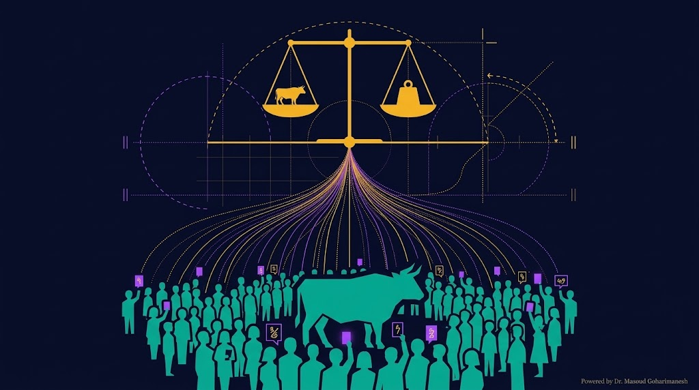
پوند
پوند
تنها
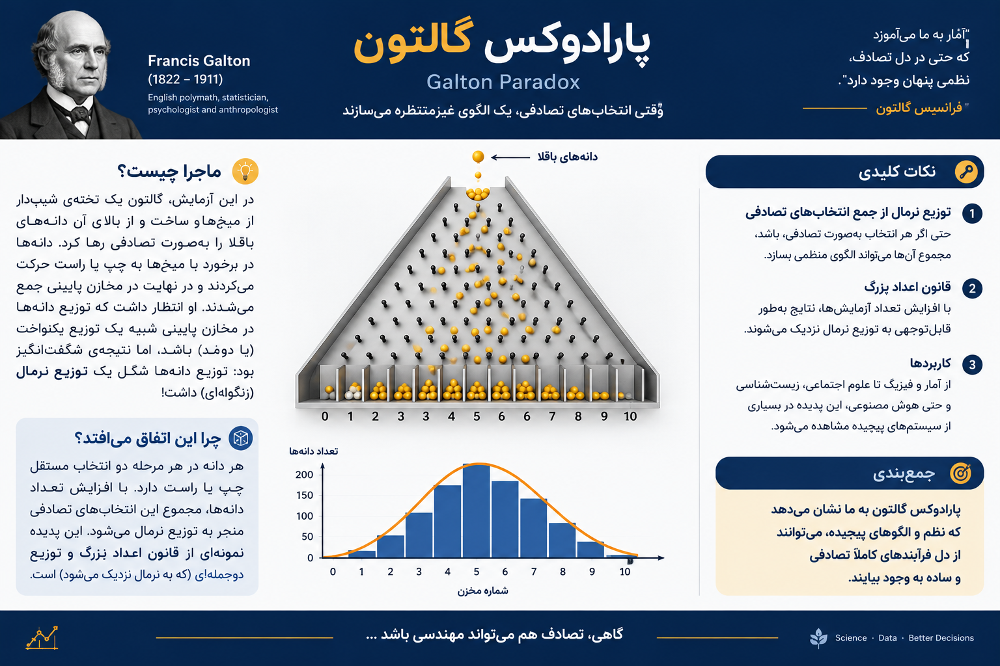
هر نفر خطای تصادفی دارد — بعضی بالا حدس زدند، بعضی پایین
خطاهای تصادفی در تجمیع، یکدیگر را حذف میکنند
میانه، به واقعیت نزدیکتر از اکثر حدسهای فردی است
| مفهوم | در آمار گالتون | در Ensemble (AI) |
|---|---|---|
| عاملهای مستقل | ۷۸۷ نفر عادی | B درخت تصادفی |
| تجمیع | میانه حدسها | رأی اکثریت یا میانگین |
| خطای فردی | خطای تصادفی هر شخص | خطای هر درخت تنها |
| نتیجه | دقت ۹۹.۲٪ جمعی | دقت بالاتر از یک درخت |
| اصل مشترک | خنثیسازی خطای تصادفی | Random Error Cancellation |
تعداد حدسزنندگان را تغییر دهید و ببینید چطور میانه حدسها به مقدار واقعی نزدیک میشود.
این شبیهساز نشان میدهد چطور تجمیع اعداد تصادفی، به مقدار واقعی نزدیک میشود. این دقیقاً همان اصل Ensemble است.
درخت تصمیم با پرسیدن یک سری سؤال بله/خیر، داده را به دستههای خالص تقسیم میکند.
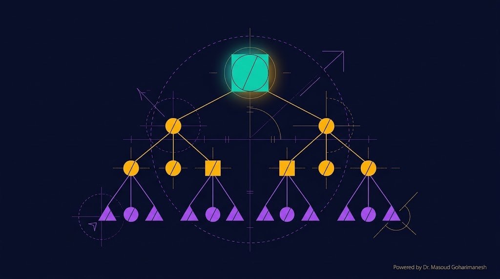
اولین ویژگی که بیشترین اطلاعات را جدا میکند
ویژگیهای بعدی برای جداسازی بیشتر
خروجی نهایی — کلاس یا مقدار پیشبینی
سناریو: موتور صنعتی با سنسور ارتعاش و دما. هدف: تشخیص سالم یا معیوب بودن بلبرینگ.
ربات متحرک در محیط کارخانه. هدف: تصمیم حرکت بعدی.
سیستم عیبیابی خودرو با ۳ سنسور.
حفاری چاه نفت. هدف: پیشبینی ROP بر اساس دادههای حفاری.
Gini میسنجد اگر یک نمونه تصادفی و برچسبش را تصادفی انتخاب کنیم، احتمال اشتباه چقدر است.
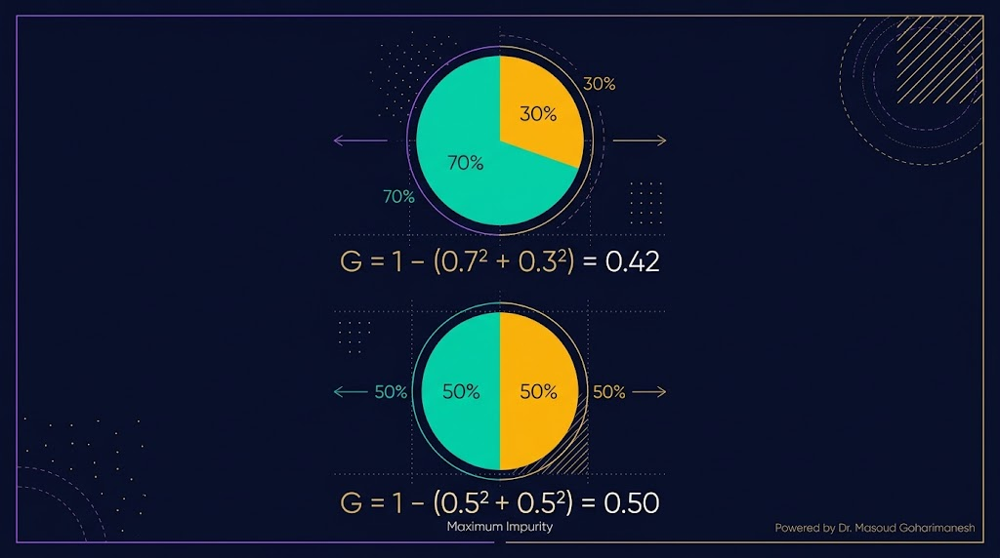
۷۰٪ کلاس A، ۳۰٪ کلاس B
$G = 1 - (0.7^2 + 0.3^2) = 0.42$
هرچه Gini کوچکتر، گره خالصتر
Entropy از نظریه اطلاعات شانون میآید. صفر: کاملاً خالص. یک: حداکثر بینظمی.
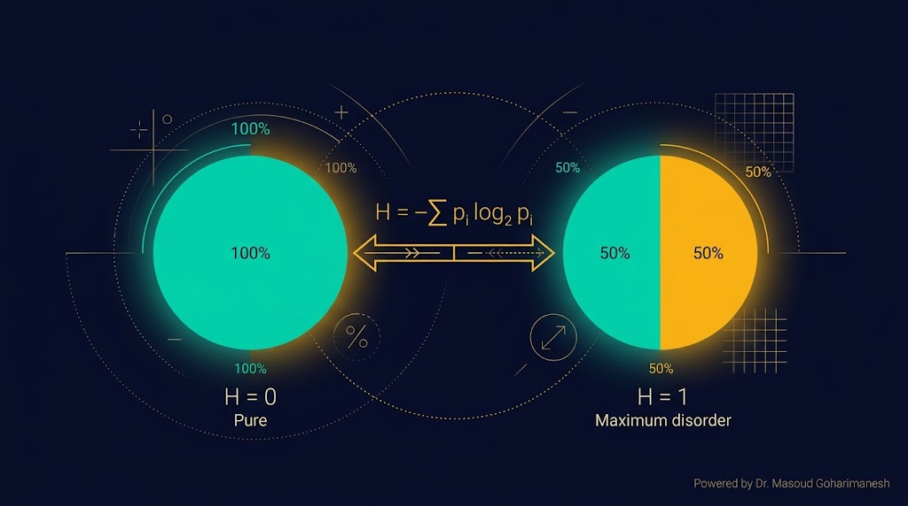
Gini سریعتر، Entropy معنیدارتر
از Gini استفاده میکند
درخت برای هر ویژگی امتحان میکند: چقدر ناخالصی کاهش مییابد؟
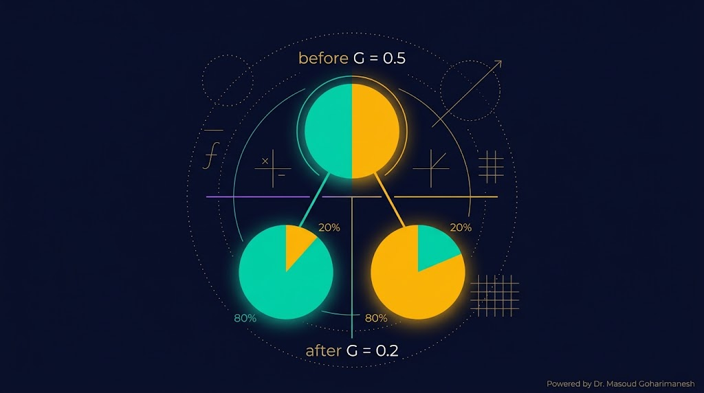
با دکمه «گام بعدی»، درخت را عمق به عمق بسازید.
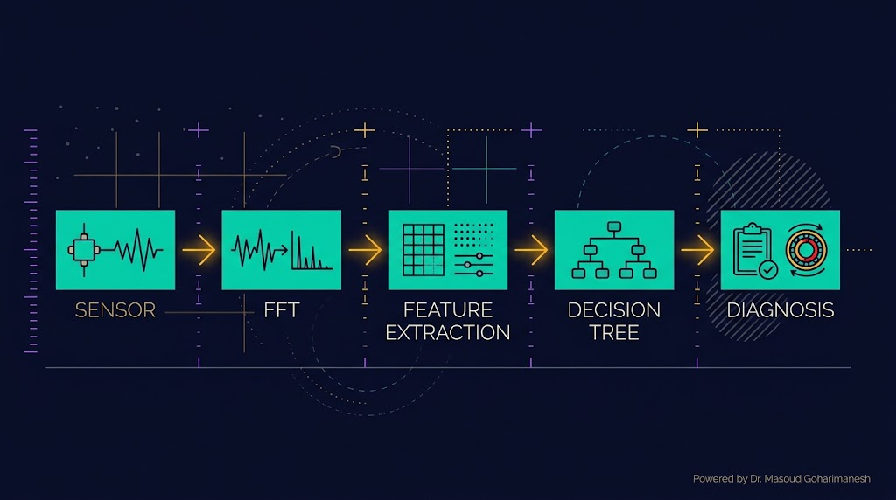
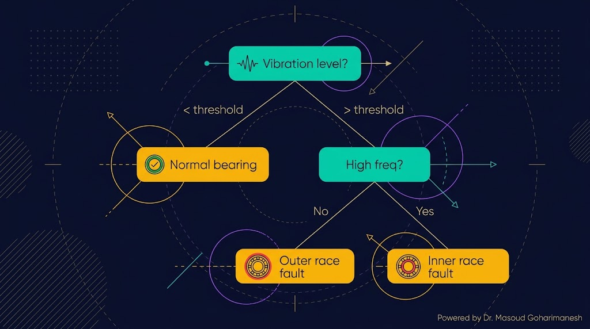
درخت بدون محدودیت، هر نمونه را «حفظ» میکند. نتیجه: عالی روی آموزش، فاجعه روی تست.
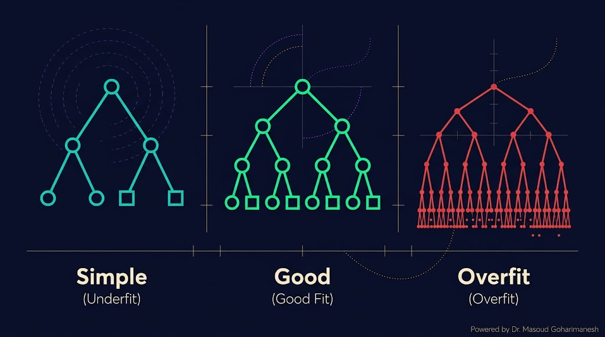
عمق ۱-۲
عمق ۳-۵
عمق ۱۰+
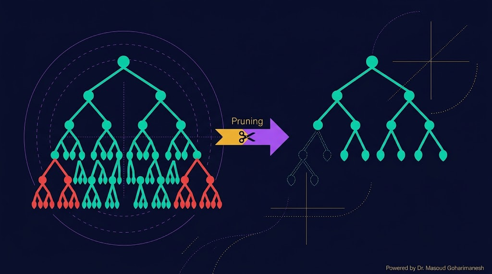
حداکثر عمق
حداقل نمونه برای تقسیم
حداقل نمونه در برگ
حذف شاخههای بیفایده
از داده اصلی، بهطور تصادفی و با جایگذاری، نمونههای جدید بسازیم.
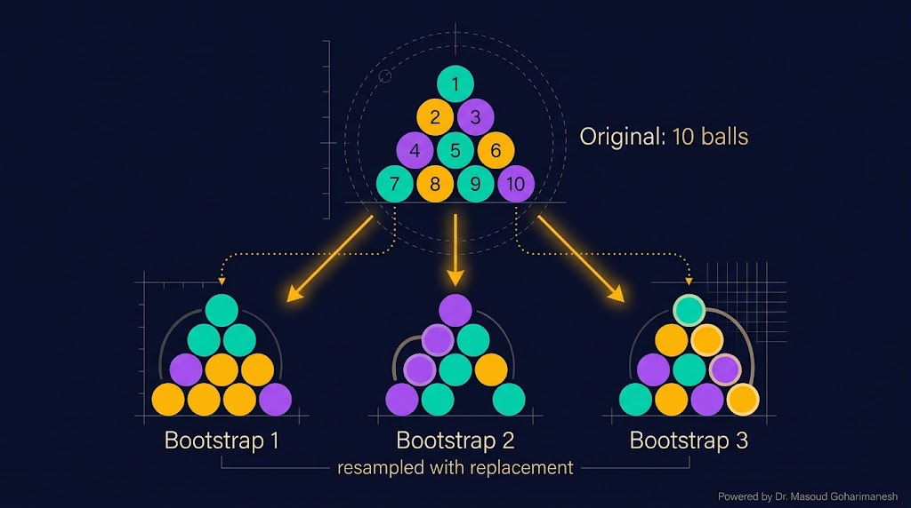
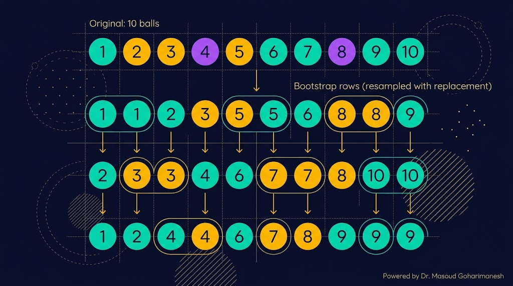
تنوع میسازد
حدود ۶۳٪ داده اصلی در هر نمونه
Bootstrap + تصادفی بودن ویژگیها = جنگلی از درختان متنوع.
هر درخت، داده متفاوت
هر تقسیم، ویژگی متفاوت
مقاوم به نویز
تعداد درختان را افزایش دهید.
Bootstrap + Aggregating
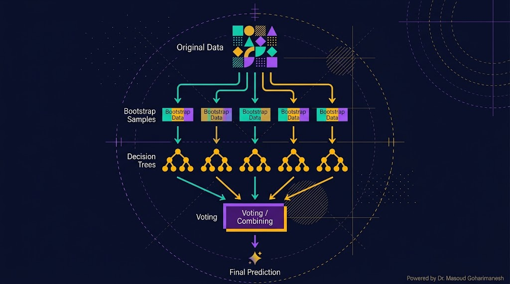

کاهش واریانس
موازی
رأی/میانگین
درختها بهصورت متوالی ساخته میشوند — هر درخت خطای قبلی را اصلاح میکند.
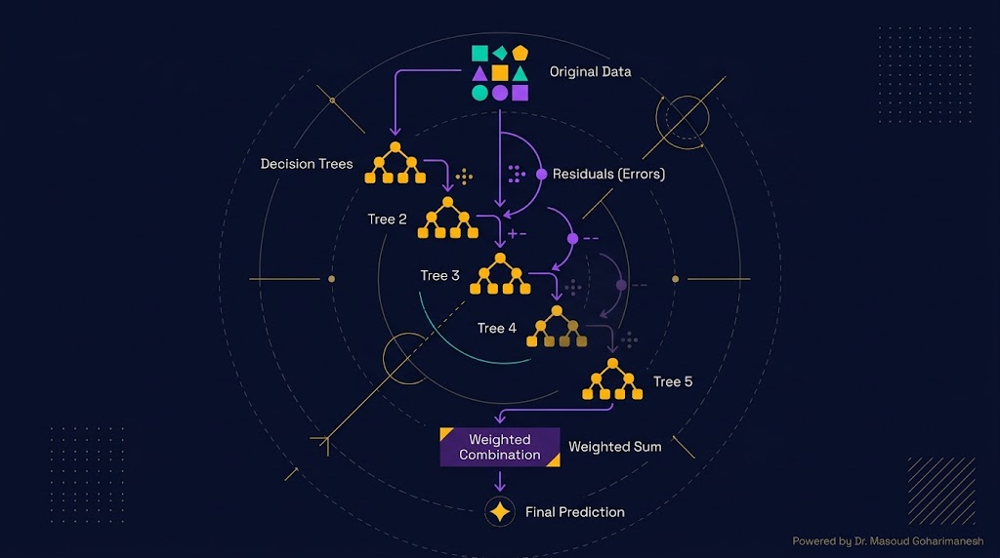
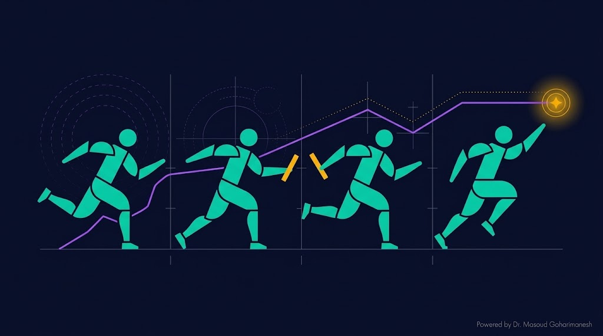
کاهش بایاس
متوالی
مجموع وزنی
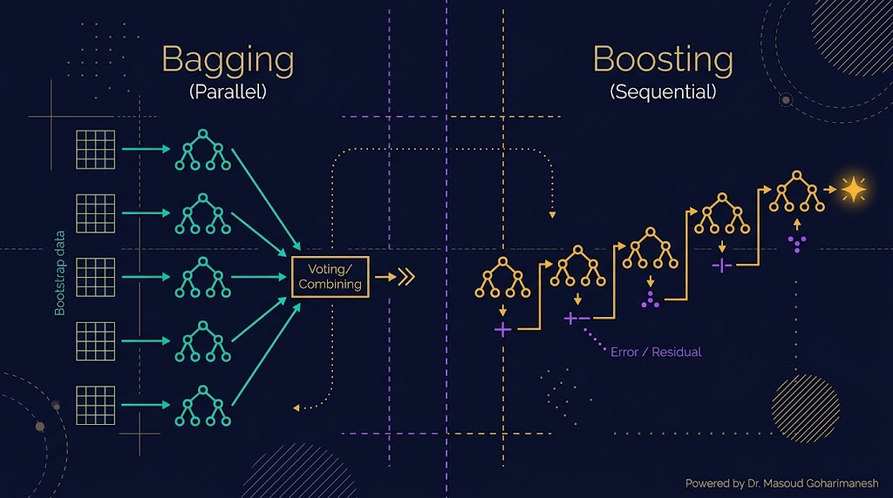
| ویژگی | Bagging (RF) | Boosting (XGBoost) |
|---|---|---|
| آموزش | موازی | متوالی |
| هدف | کاهش واریانس | کاهش بایاس |
| Overfitting | مقاوم | حساس |
| سرعت | سریع | کندتر |
هر درخت جدید روی باقیماندهها آموزش میبیند.
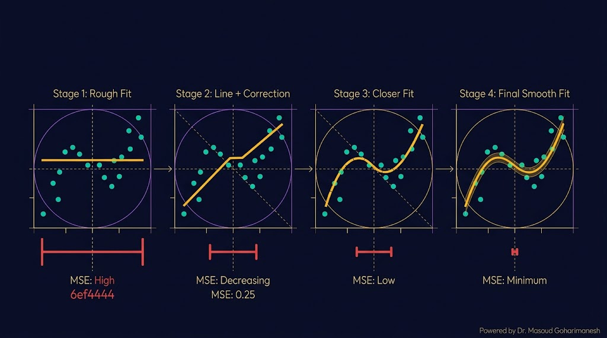

۵۰ متر — خطا ۵۰
۷۵ متر — خطا ۲۵
۸۷ متر — خطا ۱۳
نزدیک ۱۰۰
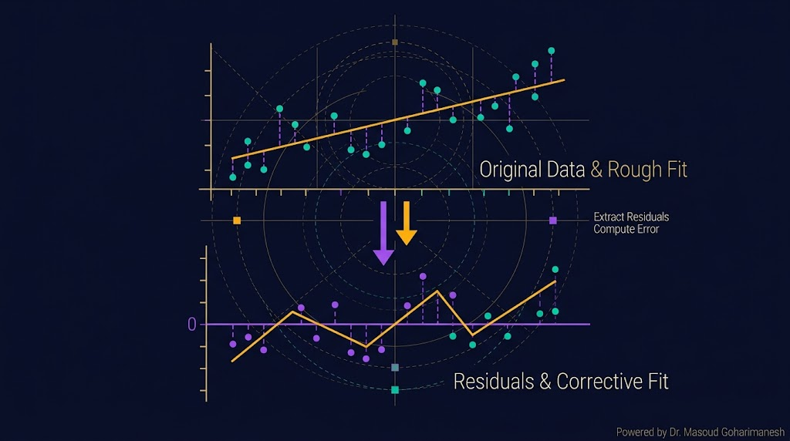
تعداد مراحل را تغییر دهید.
Random Forest میگوید کدام ویژگیها مهمترند.
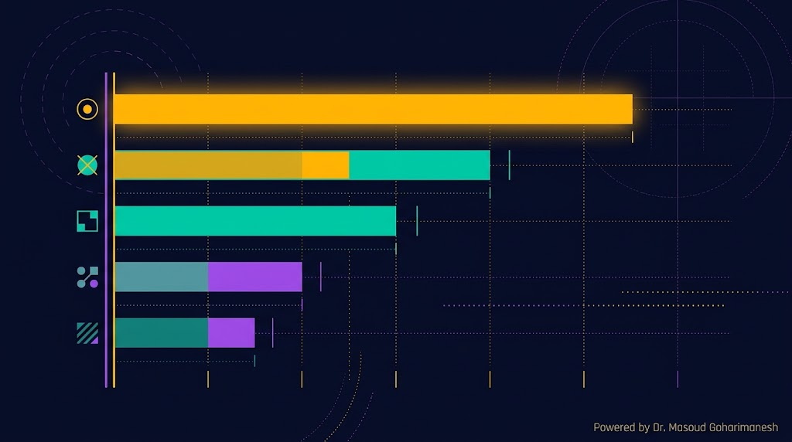
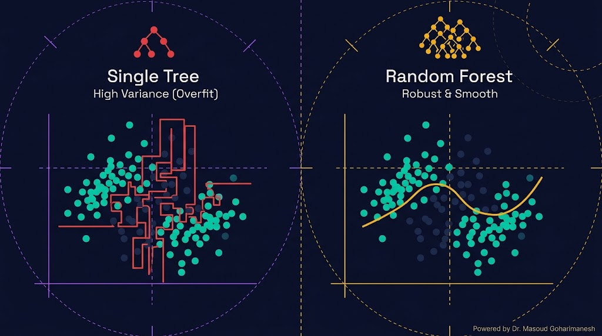
| معیار | Decision Tree | Random Forest |
|---|---|---|
| تفسیرپذیری | بالا | پایین |
| دقت | متوسط | بالا |
| Overfitting | حساس | مقاوم |
| سرعت آموزش | بسیار سریع | کندتر |
% تشخیص عیب بلبرینگ X = rand(200, 3) * [100; 10; 5]; y = ((X(:,1) > 50) & (X(:,2) > 5)); % Decision Tree tree = fitctree(X, y, 'MaxDepth', 3); pred_tree = predict(tree, X); % Random Forest rf = TreeBagger(50, X, y, 'Method', 'classification'); pred_rf = predict(rf, X); fprintf('Tree Acc: %.2f%%\n', sum(pred_tree == y)/numel(y)*100); fprintf('Forest Acc: %.2f%%\n', sum(str2double(pred_rf) == y)/numel(y)*100); % Feature Importance imp = predictorImportance(rf); bar(imp);
import numpy as np from sklearn.tree import DecisionTreeClassifier from sklearn.ensemble import RandomForestClassifier from sklearn.model_selection import train_test_split from sklearn.metrics import accuracy_score np.random.seed(42) X = np.random.rand(200, 3) * [100, 10, 5] y = ((X[:,0] > 50) & (X[:,1] > 5)).astype(int) X_train, X_test, y_train, y_test = train_test_split(X, y, test_size=0.3) tree = DecisionTreeClassifier(max_depth=3) tree.fit(X_train, y_train) print(f"Tree: {accuracy_score(y_test, tree.predict(X_test)):.2%}") rf = RandomForestClassifier(n_estimators=50) rf.fit(X_train, y_train) print(f"Forest: {accuracy_score(y_test, rf.predict(X_test)):.2%}") print(f"Feature Importance: {rf.feature_importances_}")
[AI] HW06 - نام - شماره دانشجویی به arcslab.uth@gmail.com
Claude برای تحلیل کدهای طولانی و توضیح تفاوت الگوریتمها.
تحلیل کد، مقایسه الگوریتمها
جلسه ۶ — اصلیکدنویسی و دیباگ
پشتیبانتکمیل خودکار
پیشنهادیکد Random Forest را در Claude آپلود کنید و از آن بخواهید تفاوت DT و RF را استخراج کند.
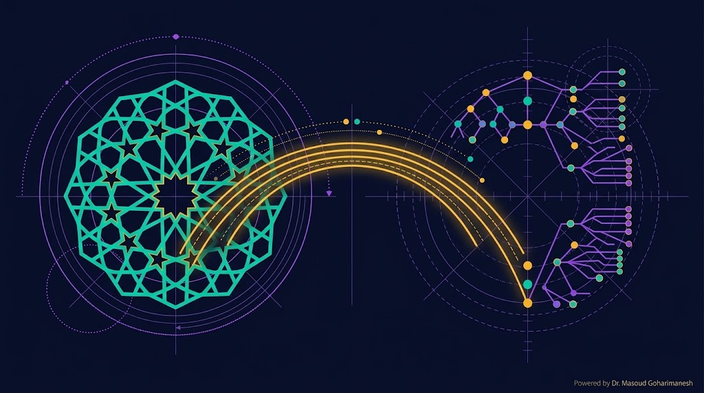
از گالتون تا Ensemble AI
Gini و Entropy
Bootstrap + رأیگیری
موازی در برابر متوالی
باقیماندهها
«وَأَمْرُهُمْ شُورَىٰ بَيْنَهُمْ»
• تحلیل واریانس (ANOVA)
• Design of Experiments
• آرایههای متعامد تاگوچی
• نسبت Signal-to-Noise (S/N)
• کاربرد در بهینهسازی مکانیکی
۱. HW06 را در Google Drive آپلود کنید
۲. با Claude درباره «Taguchi Method» بحث کنید
۳. یک مثال ANOVA ساده در Colab اجرا کنید
Next Session: ANOVA & Taguchi Method